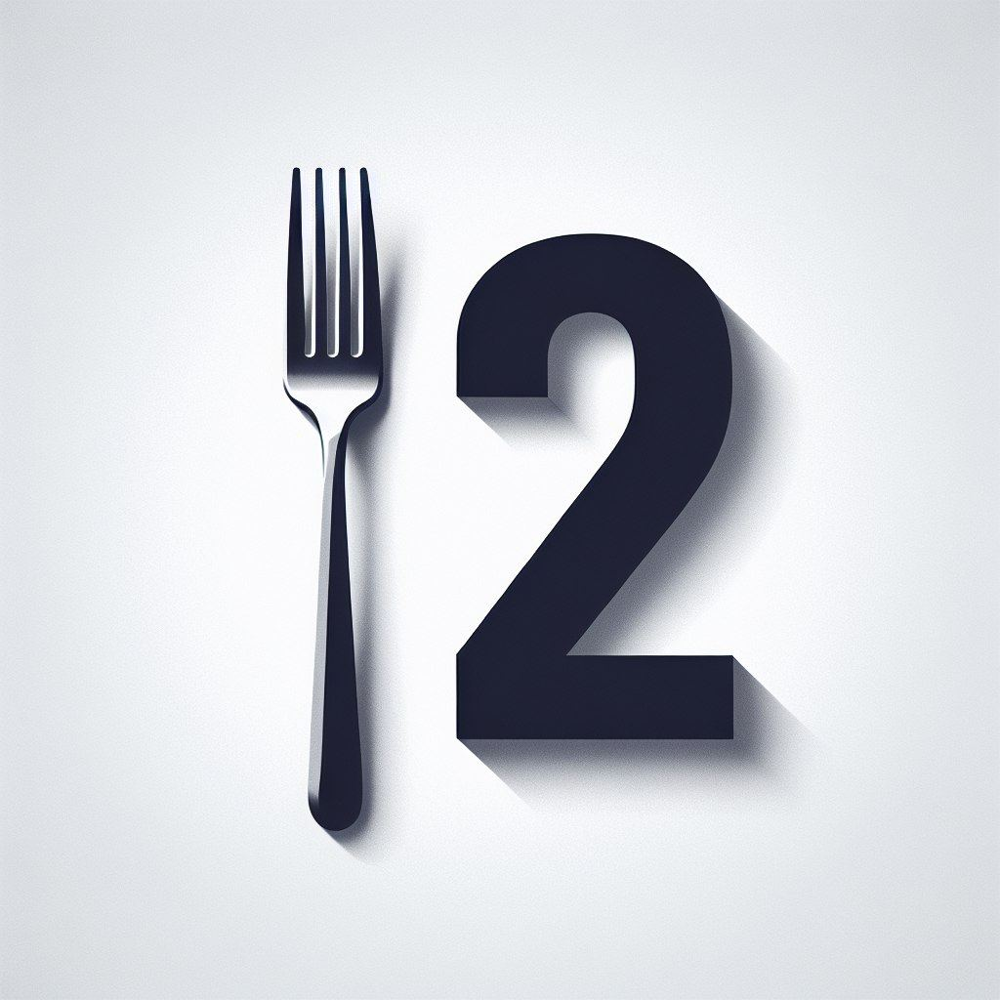
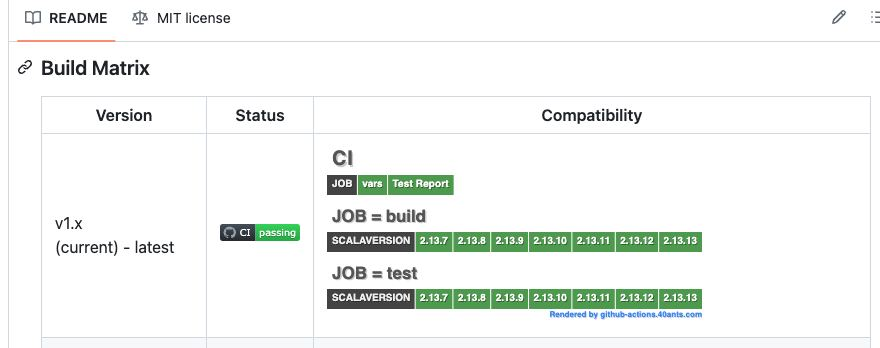

Posts with tag "project"
Каково это, быть многоруким Шивой?
posted on 2025-11-09
Иногда меня спрашивают: "Саша, как ты все успеваешь?" Но обычно эти люди не подозревают, что успеваю я очень малую часть того, что задумано. У меня постоянно, есть куча каких-то проектов и идей, над которыми хочется поработать. Снаружи может казаться, что я успеваю многое, но на самом деле я делаю лишь небольшую часть из того, что запланировал. А все остальные планы копятся и копятся.
Помощник по работе с opensource проектами
posted on 2024-03-21

Сегодня хочу рассказать про один из своих прошлых проектов. Когда-то у меня появилась идея, как упростить себе обработку большого числа пулл-реквестов и issue в своих opensource проектах. И тогда я сделал сайт 12forks.com (сейчас уже недоступен, как выглядела главная страница можно глянуть через WebArchive).
Свой Code Assistant
posted on 2025-07-20
Все выходные я провозился с созданием своего собственного Code Assistant. Очень интересно было разобраться в том, как вообще все это работает. К сожалению, статей именно про устройство кодовых ассистантов не так уж много.
Сегодня расскажу ещё про один мой проект, который так и не превратился...
posted on 2024-04-05

Сегодня расскажу ещё про один мой проект, который так и не превратился в продукт. Правда в отличие от 12forks.com, этот проект жив до сих пор. Проект связан с GitHub и полезен тем, кто развивает фреймворк или библиотеку, предназначенную для разных платформ, языков программирования или операционных систем.
This blog covers commonlisp, llm, codabrus, ai, codeassistant, clos, actors, learning, news, automation, voice, projects, git, tools, holism, zerocoder, python, aider, cursor, project, i18n, poftheday, visualization, closed, tips, seo, telegram, bot, прототип, smarthome, yandexcloud, logging, ideas, experiment, software, thoughts, programming, hackathon, mtstruetech, robotics, web, github, problems, salebot, bots, notes, emacs, macos, lisp, failures, infrastructure, lispworks, life, идеи, mcp, raspberrypi, security, opensource, sql, nix, ultralisp, tutorials, reblocks, yandex, cloud
Created with passion by 40Ants